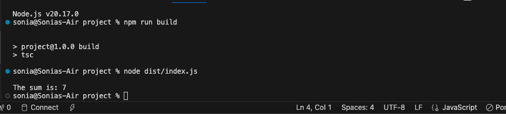

Home page
Challenges and Improvements

Challenges Faced
- Initial Setup Complexity: Setting up TypeScript, ESLint, and Prettier together was challenging due to configuration conflicts and compatibility issues.
- Module Aliasing: Configuring
baseUrl and paths for cleaner imports required multiple attempts to get the correct structure.
- Strict Type Checking: Adapting to strict type checks in TypeScript revealed areas in the codebase where types were unclear or missing.
- ESLint and Prettier Integration: Combining ESLint rules with Prettier formatting occasionally caused conflicting rules that needed manual adjustments.
- Build Output Validation: Ensuring the compiled files in the
dist folder worked as expected required careful verification and debugging.
Improvements Made
- Streamlined Configuration: Created a clear and concise
tsconfig.json file with well-documented options for ease of use and scalability.
- Enhanced Module Aliasing: Successfully implemented module aliasing for cleaner and more maintainable imports using
@utils and @services.
- Automated Code Formatting: Integrated Prettier with ESLint to enforce consistent code formatting without conflicts.
- Improved Error Handling: Used TypeScript's strict mode to identify and fix potential issues early in the development process.
- Clear Build Workflow: Ensured a seamless build process with a well-organized folder structure and clear separation between source and output files.
Chat Gpt Link
- https://chatgpt.com/share/67620ea8-4784-8005-a5d2-d94f7866f3ca